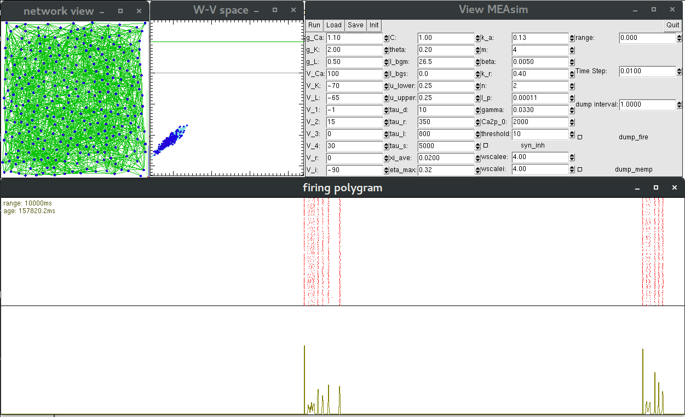
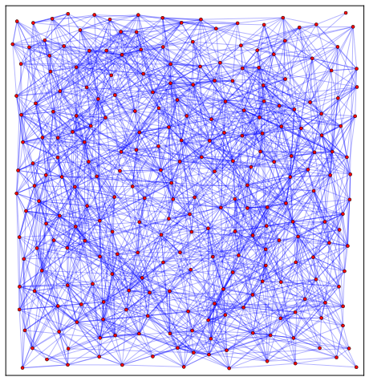

The computer model is implemented in C++ to produce the simulation results. To simplify the peripheral code for the platform and user interface specific details, we use the Common Simulation Tools framework, which is also distributed with the package in the "cst" sub-directory. Data file of the system state and parameters is saved in the HDF5 format for portability. A GUI of the simulation with parameter adjustment interface is built to facilitate the exploration of the parameter space of the model.
The model specific code is in the file "measim.cc" which implements the MEAsim C++ class. An Euler method is used for the numerical integration which involves the member functions "make_slope" and "step_forward" of the class. The ODEs defining the model are used to calculate the time derivatives of various variables in "make_slope" member function. The simulation time is incremented in the "step_forward" member function, where both the synchronous releases from presynaptic neurons' crossing spiking threshold and the asynchronous releases following the Poisson processes are implemented following the time increment.
The network system presented in the paper is constructed with the "distexp" init module (C++ class: mod_init::DistExp) of the code provided in the file "mod_init_modules.cc" which defines various module classes for constructing the system.
See README.md for build instruction.
The build process produces the following binary executables:
The GUI interface of the binary "vvol" (or "vvlt") contains windows showing the network of the system, the states of neurons (points with coordinates given by \(w\) and \(v\) variables), spiking raster plot with firing rate histogram, as well as the list of adjustable model parameters.
The network of simulated system reported in the paper is consturcted with following procedure. First, \(N\) = 256 neurons are randomly placed on a unit square with the minimal spacing \(l_\min\) = \(\sqrt{0.5/N}\). Then, for any neuron pair \(\langle i, j\rangle\) with \(i\neq j\), the synapse \(i\rightarrow j\) is established with the probability \(\exp(-l_{i,j}/l_0)\) where \(l_{i,j}\) is the distance between the neurons and the characteristic distance \(l_0\) = \(\sqrt{1.5/N}\).
The system file can be open with any of the binary executables produced in the build process above.
In the current paper, we fix most of the parameters to values similar to those found in the literature and explore a limit set of the parameters to find similar bursting morphology as our experimental observations. For example, variations on \(\tau_l\) and \(\tau_r\) changes the morphology of simulated bursts as seen here.
Both experimental and simulated spike data are processed with scripts written in Python3. And, most of the plots shown in the paper are produced with the matplotlib module of Python3. The jupyter-notebook (Python3) for producing these figures is included as mixed_plot-w6.ipynb, which uses the included custom Python module spike_utils for processing the spike data. The spike data for the presented experimental recording is included as C33.spk. While, the simulated spike data can be generated with the command:
build/rvol -page=0,dump_fire=1 --dry-run -R+300000 d_0X.h5 > d_0X.spk
The "age=0" parameter restarts the timer of the system; "dump_fire=1" instruct the run to output the spiking data as it runs; and the "--dry-run" option prevent the run from modifying the system state file, "d_0X.h5". Also needed is the simulated data for the system averages of various variables, which can be produced with the command:
build/vdmp -page=0 --dry-run -R+300000 d_0X.h5 > d_0X.dmp
These commands produce 300-second worth of data similar to the experimental recordings.